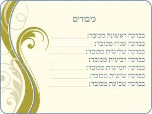
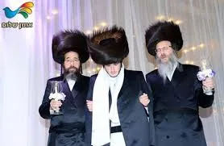

שאלות
חלק את שש ברכות הנישואין (מלבד הגפן) לשתי קבוצות?
מדוע תקנו חז''ל להודות על בריאת העולם בשבע ברכות?
שבע הברכות הן הודיה מראשית ועד אחרית. הסבר!
באר בקצרה על אלו שלושה מתנות מודים בשלושת ברכות הבריאה!
מתי תקנו חז''ל להודות על הרגשות שהקב"ה שם בתוכנו, העושים שחיינו יהיו מלאים עונג וסיפוק? למה רק בנ''ל?
האם ברכת שוש תשיש, היא תפילה על בנין ירושלים כמו ובנה ירושלים בשמונה עשרה?
הבא ראיה מהשבע ברכות, שבנישואין טמון אושר ושמחה בקנה מידה שלא מעלמא הדין?
כיצד שלושת הברכות האחרונות, הם סולם בדרגות השמחה?
נסה לתרץ לבד את השאלות, עיין בחוברת הקול החמישי - שער החופה - ניתן לראות כאןניתן לרכוש את החוברת כולל משלוח חינם עד הבית- לפרטים לחץ כאן. |

תשובות
שלוש הברכות הראשונות הן "ברכות הבריאה", שלוש הברכות האחרונות הן "ברכות השמחה".
בנוכחות חתן וכלה ניתן לגדול בהכרת מידת החסד והטוב המופלג של רבש"ע. לכך תקנו לנו חז''ל לכל המשתתפים בשמחה להודות מבריאת העולם.
הסבר נוסף שמעתי לבאר: נישואין הן חיבור של ראשית לאחרית, חיבור של אברהם אבינו למלך המשיח וגאולת ישראל, שכן על ידי הדור החדש ממשיכים את שלשלת היהדות ממתן תורה ועד הגאולה. לכן מזכרים בברכות הודיה מראשית ועד אחרית.
מודים מבראשית – מבריאת העולם, ועד אחרית – הגאולה השלמה בב''א.
א. הודיה על בריאת העולם. ב. הודיה על יצירת האדם. ג. הודיה על יצירת האשה.
שלושת הברכות אחרונות הן הודיה על מתנת רגשות השמחה שהקב"ה שם בתוכנו, העושים שחיינו יהיו מלאים עונג וסיפוק. רגשות אלו קיימים באופן מוחש ביותר בשמחת חתן וכלה, ואכן מאורע זה הוא הזדמנות היחידה שתקנו להודות בברכה על רגשות מיוחדים אלו.
מלשון הברכה משמע שהיא לא רק התעוררות כמיהה, אלא גם הודיה על הבטחת השמחה העצומה שתהיה בשוב ה' את שיבת ציון.
בברכת שמח תשמח מוזכרת השמחה המרוממת שהיתה לאדם ולחוה בגן עדן. המשתתפים בשמחת החתן והכלה, מברכים אותם שירגישו במשך כל חייהם שמחה נעלה זו. סימן שבידיהם של החתן והכלה להרגיש בזמן נישואיהם מעין שמחה זו.
א. השמחה בשוב ה' ציון. ב. למעלה מזה שמחת גן עדן. ג. למעלה מזה שמחת הגאולה השלימה שהעולם כולו יגיע לתיקונו. ואת כל דרגות השמחה הנפלאות הללו ניתן להשיג בהקמת בית יהודי.


לשמיעות שיעור בנושא שלוש ברכות השמחה - לחץ כאן
ובנושא להודות מראשית ועד אחרית - לחץ כאן
 הקול החמישי - בשמחת חתן וכלהלהארות והערות שאלות ותגובות - לחץ כאן
הקול החמישי - בשמחת חתן וכלהלהארות והערות שאלות ותגובות - לחץ כאן